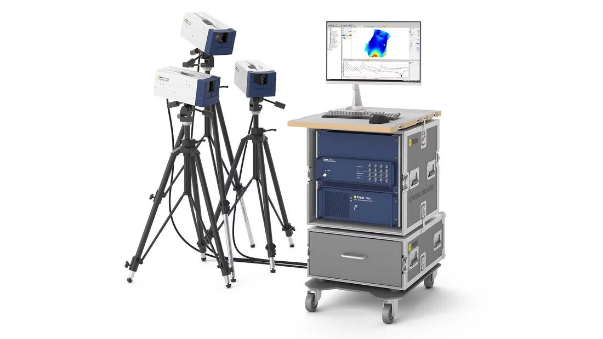

Preparing CAE data overnight
Lightweight construction is the guiding principle in aerospace development. Adapted materials such as fiber composites must be used if aircraft are to reach their destinations. Experimental modal tests are vital for reliably validating finite element simulations. Automated individual tests are a time-saving solution for implementing an efficient bottom-up approach – in other words, for validating component models prior to a final GVT (ground vibration test).
Validating FE models by experimental modal testing
Capture valuable data by performing measurements on scaled models in the wind tunnel. Doing so allows you to visually and remotely record flutter and other undesirable properties without influencing the flow. The optical vibration sensors provide you with an integrated concept for using CAE data to prepare tests. This measuring technology fits into the CAE world smoothly, since the sensor is a software-controlled laser beam. Automated solutions such as RoboVib® provide your simulation department with the data it needs to conduct validation operations – even overnight.
MAC analysis validating FE models of differently machined lightweight parts
Operational deflection shape (ODS) of a 17-blade turbine wheel at 700Hz
Validating complex models accurately and without contact
The need to validate simulation models of complex mechanical structures has grown in importance for efficiency in the design process. This is especially true for non-linear structures (such as composite panels and jointed components) where it is critical to use an accurate full-field measurement method. This tutorial covers a how-to-guide and use-cases of Scanning Laser Doppler Vibrometry (SLDV) as a non-invasive technology to efficiently characterize critical mechanical structures. Read the full paper from the IMAC International Modal Analysis Conference.
Related Products

PSV-500 Scanning Vibrometer
The PSV-500 Scanning Vibrometer measures vibrations on an entire surface in a non-contact and laser precise way. Its visible HeNe laser provides outstanding SNR on well-reflecting sample surfaces and is ideal for small samples and under water. This flexible measurement platform allows researchers and developers to master the most challenging vibration measurement tasks with ease. Detect and visualize operational deflection shapes and Eigenmodes with this cutting-edge laser Doppler vibrometer. Upgrade or expand it to a full 3D system, once your application-specific demands grow.
Read more

PSV-500-3D Scanning Vibrometer
PSV-3D Scanning Vibrometers measure 3D dynamics in research and product development in a reliable and precise way. The visible HeNe laser provides outstanding SNR on well-reflecting sample surfaces. The deflection shapes and Eigenmodes detected help you with everything from NVH, acoustic and structurally dynamic issues to ultrasonic analyses, FEM validation and non-destructive testing.
Read more